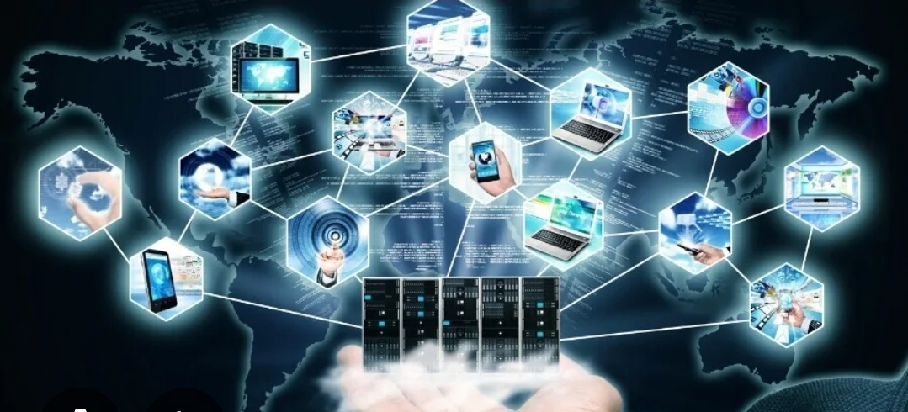

Antes de falarmos da informática aplicada, devemos falar um pouco da informática. Muitos acham que informática é só mexer em um computador, mas essa teoria é deveras ultrapassada. A informática tem diversas áreas e é muito importante na nossa vida. Hoje vamos estudar uma área muito específica que é a informática aplicada. Então, vejamos:
Informática é a ciência que estuda o tratamento automático e racional da informação, utilizando principalmente computadores e sistemas eletrônicos. O termo "informática" é uma combinação das palavras "informação" e "automática", refletindo a ideia de processar informações de maneira automática. Essencialmente, informática refere-se ao estudo e à aplicação prática da informação por meio de computadores e sistemas eletrônicos. Não é só apertar um botão e magicamente tudo acontece!
1. Hardware - parte física do computador (CPU, monitor, teclado, mouse, celulares etc.)
2. Software - programas e sistemas que permitem executar tarefas (sistemas operativos, aplicativos, softwares de gestão).
3. Redes - conexão de dispositivos para compartilhar informações (internet e redes locais).
4. Dados e informação - a base do funcionamento da informática, que transforma dados brutos em informações úteis.